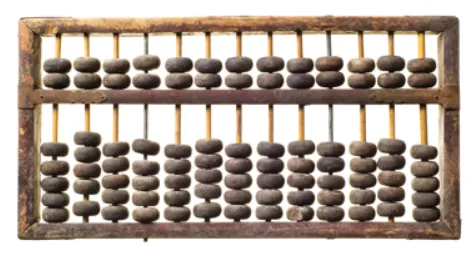
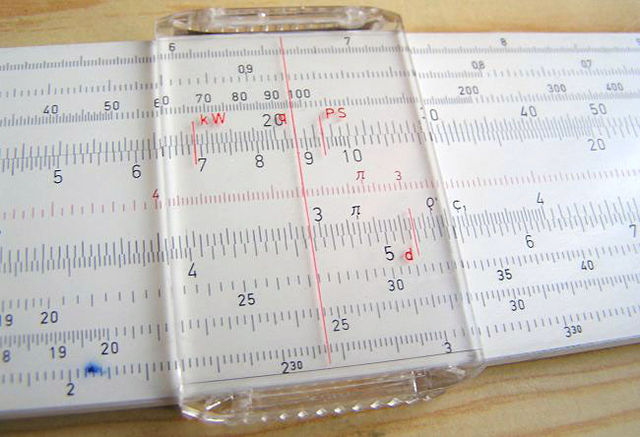
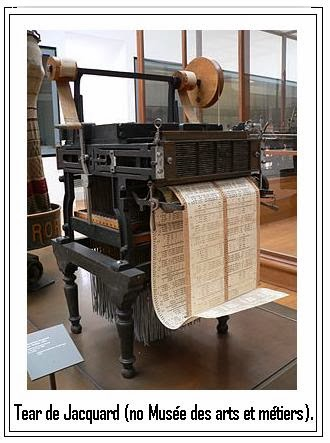

| Computadores | Ano de criação | Criador | Utilidade | Imagem Computador |
|---|---|---|---|---|
| Ábaco | 5500 A.C | Desconhecido | Era utilizado como ferramenta de cálculo por anos |  |
| Régua de Cálculo | 1638 | William Ougthred | Foi criado uma tabela para grandes multiplicações, sendo exatamente uma régua, possuindo diversos valores pré calculados, adiantando apenas a partir de uma "tabuada". |  |
| Máquina de Pascal | 1642 | Blaise Pascal | Foi criada a primeira máquina capaz de fazer 2 operações: somar e subtrair |

|
| Primeira Calculadora Completa | 1672 | Gottfried Wilhelm Leibniz | Primeira calculadora capaz de realizar as 4 operações |

|
| As máquinas até este ponto tinham apenas propósitos específicos, mas começaram a mudar a partir daqui. | ||||
| Primeira Máquina Programável | 1801 | Joseph Marie Jacquard | Utilizava o sistema de cartões, sendo usada (como os computadores atuais) para agilizar os processos. Obs: Essa primeira máquina inspirou a máquina de Hollerith, que era capaz de calcular o censo dos EUA e reduzir o tempo de computação em 66% em 1890 |  |
| Máquina Analítica | 1833 | Charles Babbage | Criou o primeiro computador de propósito geral, sendo considerado o PAI DO COMPUTADOR, mas completamente mecânico. |

|
| Primeira Programadora | 1833 | Ada Lovelace | Graças ao surgimento do primeiro computador, surgiu a primeira programadora, a Mãe da Computação (tendo reconhecimento através da linguagem ADA) |

|
Início das GeraçõesA partir deste ponto, iniciou-se o processo de criação de diversos computadores mecânicos com diversos propósitos, sendo um dos principais pontos a questão militar. Desta forma, os computadores começaram a ser modernizados e a receber componentes eletroeletrônicos. Além disso, a partir da Segunda Guerra Mundial, esse terrível marco na humanidade fomentou ainda mais o desenvolvimento dos computadores, que passaram a realizar diversas ações, como criptografia. Alan Turing (o pai da computação) desenvolveu uma máquina capaz de quebrar a criptografia gerada pelo exército alemão. |
| Geração do Computador | Data de Utilização | Principal meio usado | Problemas e Velocidade |
|---|---|---|---|
| Primeira (1ª) | 1946 ━ 1957 | Válvulas Eletrônicas | Eram gigantescas e aqueciam demais, realizando apenas 40.000 operações por segundo. |
| Segunda (2ª) | 1958 ━ 1964 | Transistores | Foram utilizados para diminuir o tamanho da primeira geração e melhorar o aquecimento e a velocidade, mas ainda eram grandes. Realizavam 200.000 operações por segundo. |
| Terceira (3ª) | 1965 ━ 1971 | Circuitos Integrados | Baratearam as máquinas e aumentaram a velocidade de processamento, realizando 1.000.000 de operações por segundo (cinco vezes mais que a geração anterior). |
| Quarta (4ª) | 1975 ━ 1990 | Microprocessadores | Surgiram computadores ainda mais potentes e popularizou-se os COMPUTADORES PESSOAIS. |
| Quinta (5ª) | 1990 ━ Dias Atuais | Novos Processadores | Nos dias atuais, estamos constantemente em contato com diferentes mudanças nos processadores e com melhorias na velocidade das máquinas, na quantidade de memória, no processador, nas taxas de transferência, etc. |